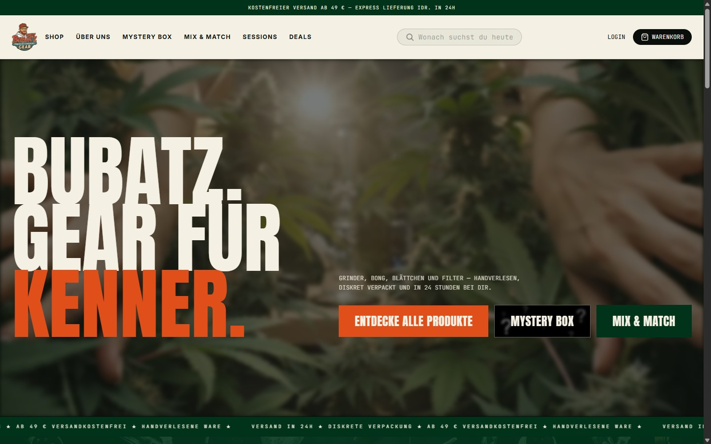
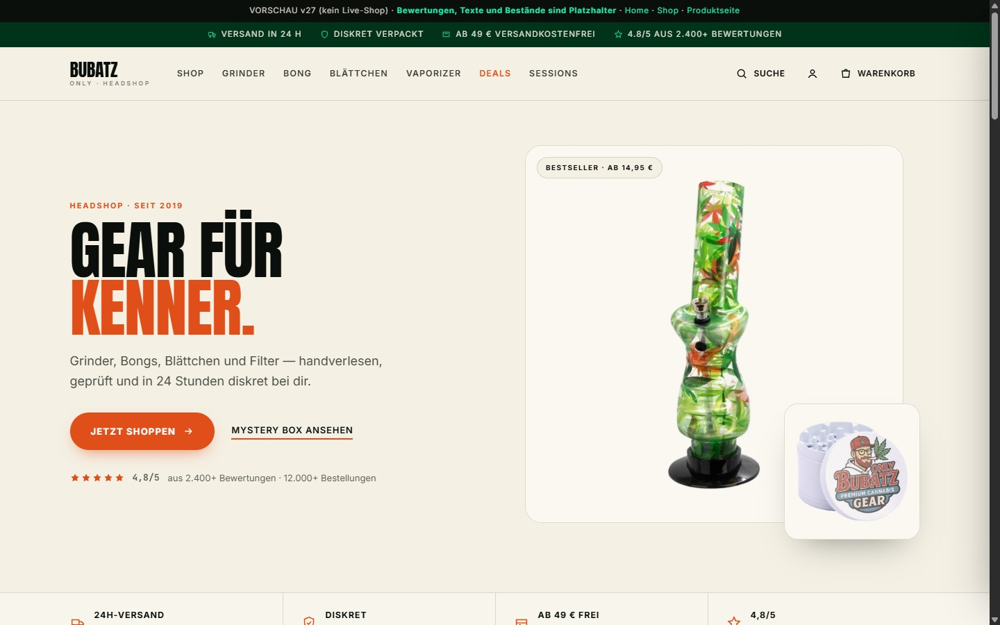
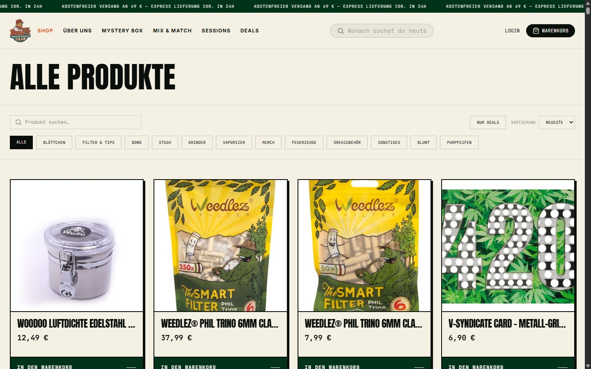
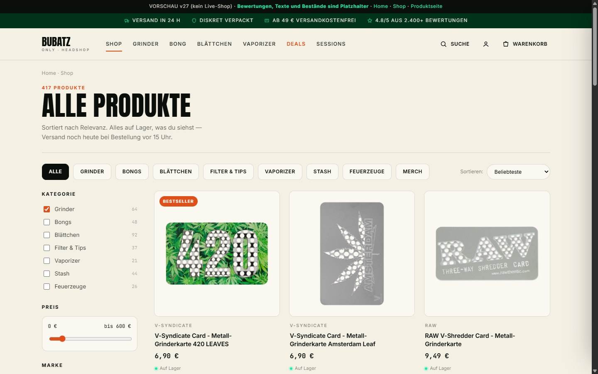

Gleicher Look wie dein Live-Shop — gleiche Schrift, gleiche Farben, gleicher Ton. Aber aufgeräumt und auf Verkauf gebaut.
Unten siehst du live und v27 direkt nebeneinander, danach was schon im Shop passiert ist.
Live konkurrieren drei gleich laute Buttons und ein unscharfes Pflanzenfoto. In v27 führt ein Produkt die Seite an,
ein klarer Knopf führt ins Sortiment — und direkt darunter steht, warum man hier kaufen sollte.
Live — heute

v27 — Vorschlag

→Dazu gekommen: Trust-Zeile (24 h · diskret · ab 49 € frei · 4,8/5), Kategorien im Hauptmenü, eigener Deal-Block, Bestseller mit Sternen.
2 · Shop
Ein Bildstil statt Flickwerk
Live stehen weiße Studiofotos, Packshots und Herstellergrafiken ohne gemeinsamen Rahmen nebeneinander.
In v27 sitzt jedes Produkt auf derselben Fläche, gleich groß, mit demselben Schatten — plus Filter, Kategorie-Reiter und Bestandshinweis.
Live — heute

v27 — Vorschlag

→Wichtig: Genau dieser Bildstil ist bereits auf 379 Produkte in Shopify angewendet — die Originale sind alle noch da.
3 · Produktseite
Kaufen, bevor man scrollt
Live liegt der Warenkorb-Knopf rund 1.100 Pixel unter dem Rand — erst kommt ein langer Text, dann Specs, dann Varianten.
In v27 steht die Kaufbox rechts oben: Preis, Variante, Menge, Knopf, Liefertermin. Beschreibung kommt danach. Auf dem Handy klebt der Kaufen-Knopf unten.
416 Produktbilder freigestellt und auf ein einheitliches Format gebracht (1000×1000, gleicher Füllgrad, weicher Schatten).
379 Produkte in Shopify haben jetzt dieses Bild als Titelbild — Originale bleiben erhalten, pro Produkt ein Bild zusätzlich.
Stichprobe geprüft: 18 von 18 Produkten korrekt (Titelbild = neues Bild, altes Bild noch vorhanden).
Rückgängig in einem Befehl — Rollback-Datei mit allen 379 Original-Titelbildern liegt bereit.
Kein Live-Eingriff: onlybubatz.de, Theme und Bestellungen wurden nicht verändert.
Was noch fehlt — und warum
Live-Seite umbauen: Der Live-Shop läuft nicht über Shopify, sondern über ein eigenes Frontend (Hydrogen auf Oxygen). Dessen Code liegt nicht auf diesem Rechner — ohne den Ordner kann ich Hero, Kaufbox und Grid nicht live stellen.
70 Produkte ohne Live-Bild: In Shopify gibt es 70 Artikel, die im Live-Katalog kein Bild haben (z. B. VOLCANO CLASSIC/HYBRID, Mystery Box, Gunnysack). Die brauchen echte Fotos oder müssen aus dem Sortiment.
Bewertungen: Sterne, Anzahl und Texte in dieser Vorschau sind Platzhalter. Für echte Zahlen braucht der Shop eine Bewertungs-App mit Bestellbezug.